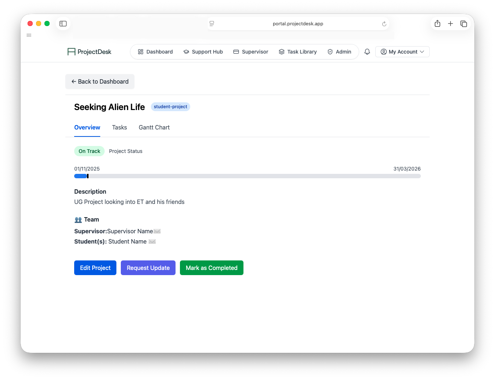
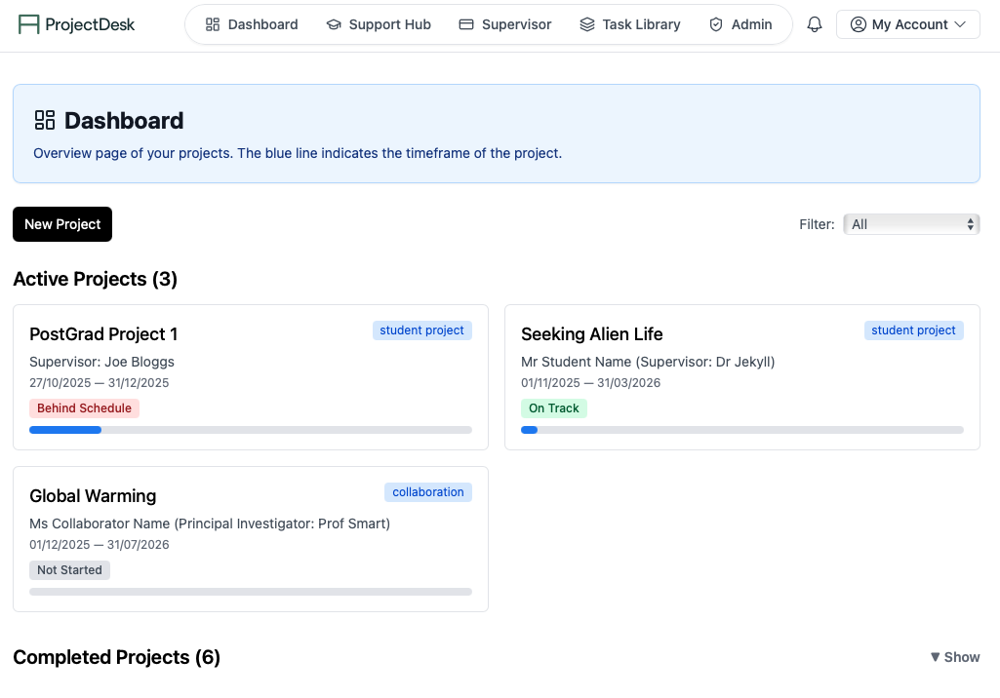
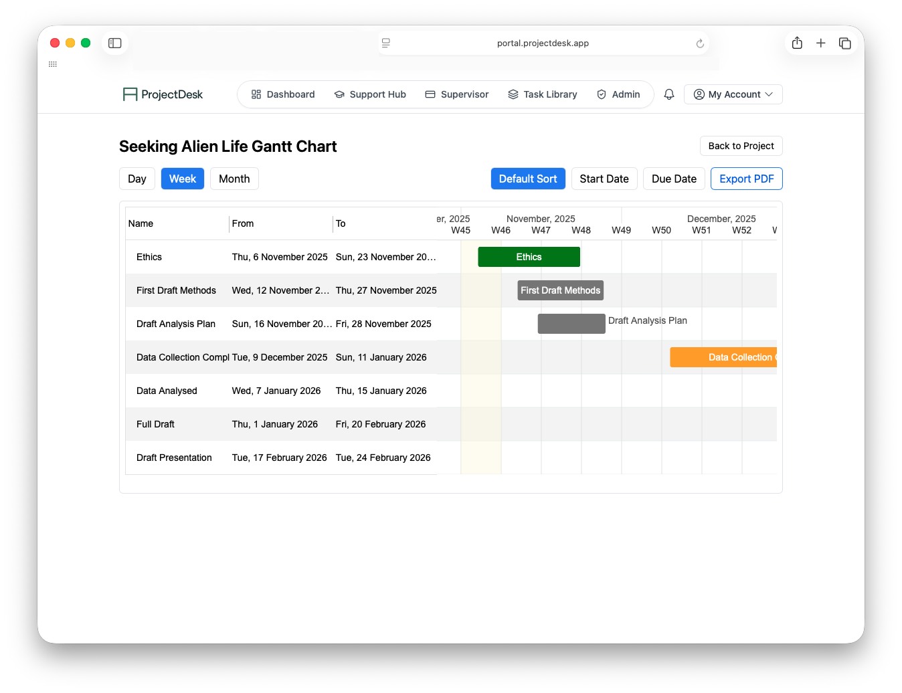
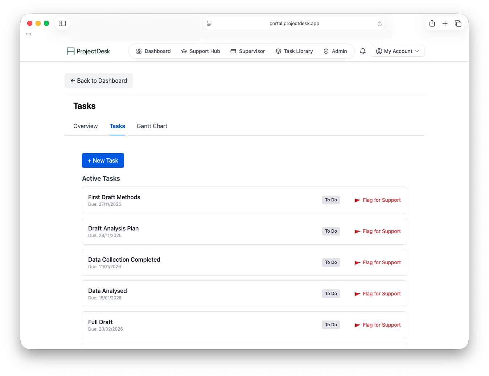
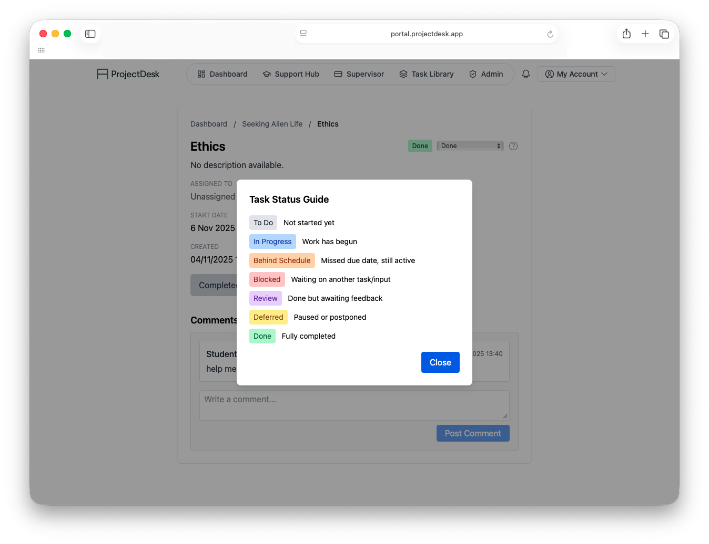

Assessment Command Centre
Track progress across cohorts and modules with at-a-glance completion, delay, and quality indicators.
Free trial access - No credit card required
MarkingDesk.app gives module leaders and marker teams one place to allocate submissions, align grading standards, track throughput, and publish feedback on time.
Try the full platform before rollout and invite your marking team when you are ready.

Product tour
From setup to final release, MarkingDesk keeps marking operations clear, fair, and on schedule.

Track progress across cohorts and modules with at-a-glance completion, delay, and quality indicators.

Set milestones for first marking, moderation, and final publication so students receive feedback on time.

Assign submissions by workload, expertise, or module rules and rebalance instantly when priorities change.

Surface disagreements, monitor second marking status, and keep a clear audit trail of every decision.
MarkingDesk combines allocation, rubric consistency, moderation, and reporting so your team can focus on quality feedback.
Create shared criteria and exemplars so every marker applies standards consistently from first script to last.
Distribute scripts fairly and quickly across markers, then rebalance instantly when workloads or absences shift.
Run second marking and moderation checks with clear status tracking, comparisons, and escalation paths.
Export evidence of allocations, grading changes, and moderation decisions for boards and external review.
MarkingDesk reduces spreadsheet overhead and email chasing by centralising the full marking workflow. Teams can see exactly what has been allocated, what is overdue, and what needs moderation. The result is faster turnaround, clearer accountability, and a better feedback experience for students.
Workflow in action
Configure assessments, rubrics, and deadlines up front so every marker starts from the same standard.
Assign scripts and monitor capacity live, with clear alerts when queues, deadlines, or moderation need attention.
Complete moderation checks and publish results knowing each grading decision is documented and traceable.
Simple plans for teams piloting MarkingDesk or rolling it out across a department.
Free Trial
Full feature access for your pilot team
Custom
For schools and faculties with larger marker pools.
Volume
Designed for institution-wide adoption and governance.
What teams are saying
"We could instantly see where moderation was stuck, then rebalance work before deadlines slipped."
"MarkingDesk removed a lot of manual coordination and gave us a clear audit trail for every decision."